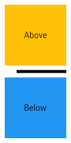

A thin horizontal line, with padding on top and bottom side. In the material design language, this represents a divider. Dividers can be used in lists, Drawers, and elsewhere to separate content.
The box's total height is controlled by height argument. The appropriate padding is automatically computed from the height.
The following sample shows how to display a Divider between an orange and blue box inside a column. The Divider is 20 logical pixels in height and contains a vertically centered black line that is 5 logical pixels thick. The black line is indented by 20 logical pixels.

class MyApp extends StatelessWidget {
static const String _title = 'Flutter Code Sample';
@override
Widget build(BuildContext context) {
return MaterialApp(
title: _title,
home: Scaffold(
appBar: AppBar(title: const Text(_title)),
body: MyStatelessWidget(),
),
);
}
}
/// This is the stateless widget that the main application instantiates.
class MyStatelessWidget extends StatelessWidget {
MyStatelessWidget({Key key}) : super(key: key);
@override
Widget build(BuildContext context) {
return Center(
child: Column(
children: <Widget>[
Expanded(
child: Container(
color: Colors.amber,
child: const Center(
child: Text('Above'),
),
),
),
const Divider(
color: Colors.black,
height: 20,
thickness: 5,
indent: 20,
endIndent: 0,
),
Expanded(
child: Container(
color: Colors.blue,
child: const Center(
child: Text('Below'),
),
),
),
],
),
);
Are are some argument you can use to modify the divider:
color: The color to use when painting the line.height: The divider's height extent.endIndent: The amount of empty space to the trailing edge of the divider.indent: The amount of empty space to the leading edge of the divider.thickness: The thickness of the line drawn within the divider.